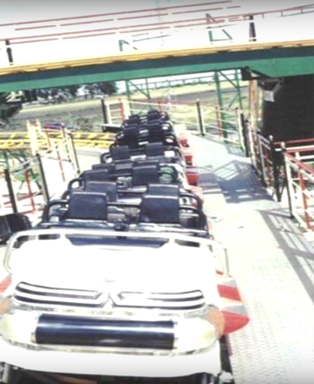
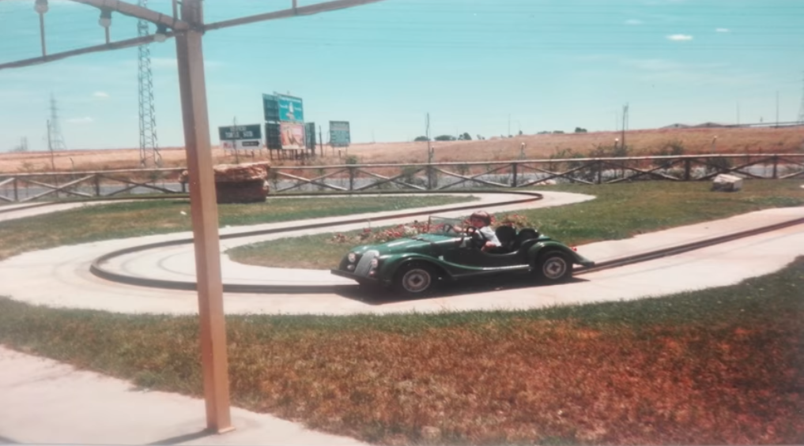

Síguenos en Facebook

Bienvenidos a la página web del parque acuático "Lagosur", situado en el centro comercial "Parquesur". En esta web encontrarás un poco de su historia, fotos, articulos de prensa y vídeos.Les animamos a visitar la web y,como no, a hacerlo en persona(avenida de Gran Bretaña, S / N. Código postal: 28916 Leganés, Madrid).Para alguna consulta, contacte al siguiente número 916 87 36 00. ¡Les esperamos!
Día entero..................................................1.300 ptas.
Tarde.........................................................800 ptas.
Discoteca Universal + copa + piscina de olas (Sólo noche)...1.500 ptas.
Discoteca Universal + 2 copas + piscina de olas (Sólo noche)..2000 ptas.
*Parque de atracciones entrada libre.
Este sitio web tiene el objetivo de hacer brotar ese recuerdo de mucha gente de los municipios del sur de Madrid, en concreto de la gente de Leganés que fueron a finales de los ochenta y principios de los noventa al centro comercial "Parquesur" y pudieron disfrutar en el parque de atracciones, si eran menores o en la discoteca Universal Sur si eran adultos pero sobre todo en el parque acuático "Lagosur", lugar que reunía tanto a menores como a adultos. La estética ha sido realizada de forma que recuerde a una web de la etapa primigenia de internet con letras verdes sobre fondo negro imitando las pantallas de fósforo verde. Esta web pretende recrear cómo hubiera sido la página web de dicho parque cuando estuvo en funcionamiento. Espero que la disfrutéis y os haga viajar en el tiempo.
Mi nombre es Federico, soy el webmaster del sitio web.Profesor, arqueólogo, escritor...pero sobre todo un nostálgico de los ochenta, que apenas viví y de los noventa que viví de niño. Precisamente fue en esa época cuando vivía en Leganés y más de una vez fui a Lagosur pero no me produjo tanta inquietud el parque hasta muchos años después cuando se abandonó quedando muchas atracciones siendo comidas por la maleza, en concreto las estatuas de dos focas tobogán que juntas sostenían una pelota en la piscina familiar. Cuando iba y venía en coche por la carretera las veía, con el paso del tiempo más y más deterioradas hasta que un día dejé de verlas y ahí fue cuando me empecé a interesar por el parque. Con la expansión de internet fui recolectando toda la información que pude sobre el parque acuático (Que realmente es muy poca) y una vez recolectada decidí que ese parque debía dejar de existir sólo en mis recuerdos. Ese es el origen de este sitio web.
Síguenos en Facebook